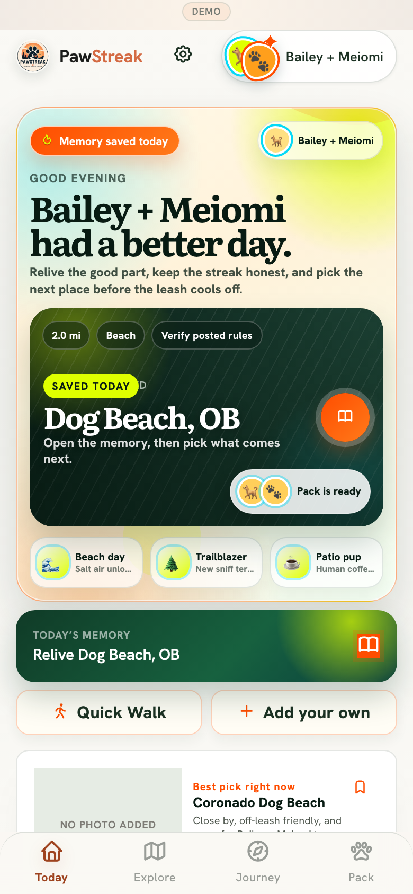
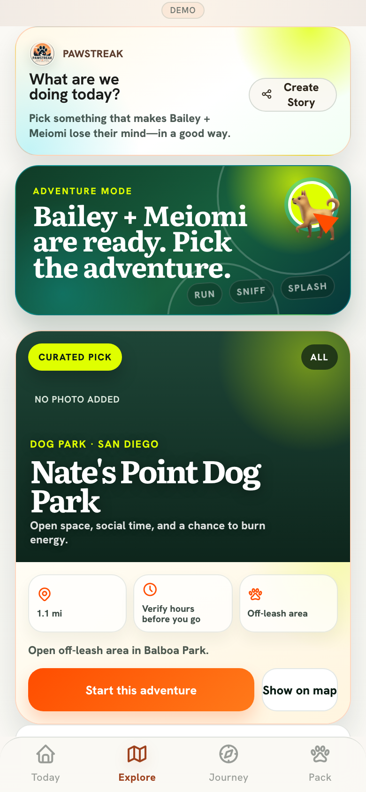
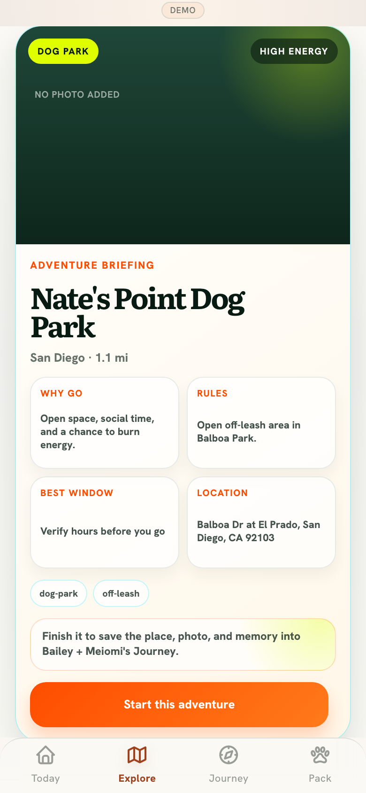
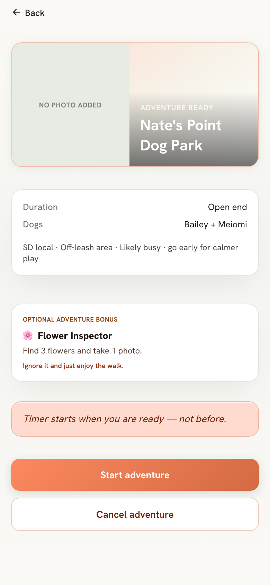
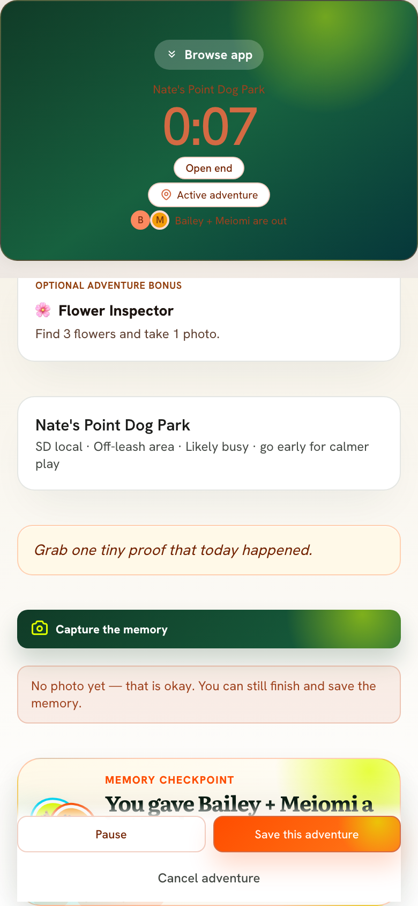
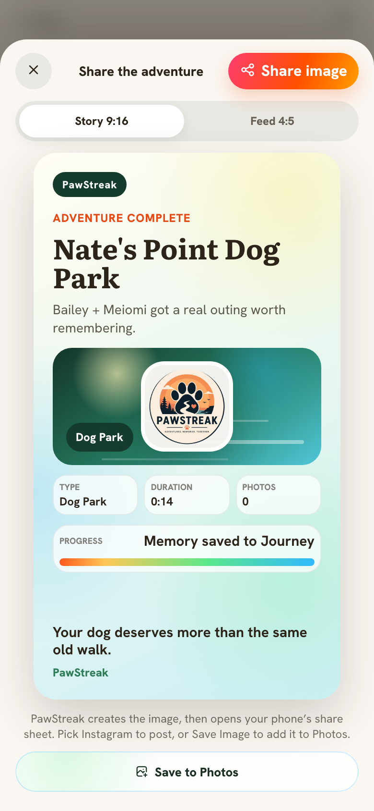

One outing. A story worth keeping.
Six genuine product screens, arranged in the order a dog parent experiences them. No stock imagery or invented UI.






Recorded from the working app demo
From “where to?” to “remember when?”
A real screen recording of the preview experience. It shows the product's intended loop, not a customer activity report or proof of live native-device performance.
Source manifest:
These local relative assets are preserved in the PawStreak repository. This page is not publicly published.
assets.json. Capture timestamp: October 31, 2026 UTC. Product preview only. No fabricated screenshots, customer statistics, or release claims.These local relative assets are preserved in the PawStreak repository. This page is not publicly published.